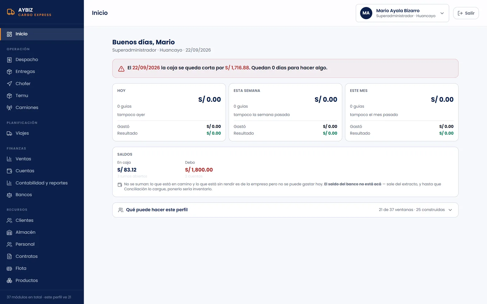

Sistema de carga y encomiendas para AYBIZ Cargo Express
AYBIZ es la empresa de transporte de carga de mi familia, en Huancayo. Desarrollé un sistema que junta en un solo lugar el despacho de encomiendas, la caja, los viajes de los camiones, las rendiciones de los choferes y la contabilidad.

- Periodo
- Desde agosto de 2026.
- Tecnologías
- React, Vite, Tailwind CSS, Supabase (PostgreSQL) y Cloudflare Pages.
- Estado
- Terminado y en pruebas con datos ficticios, antes del piloto en la empresa.